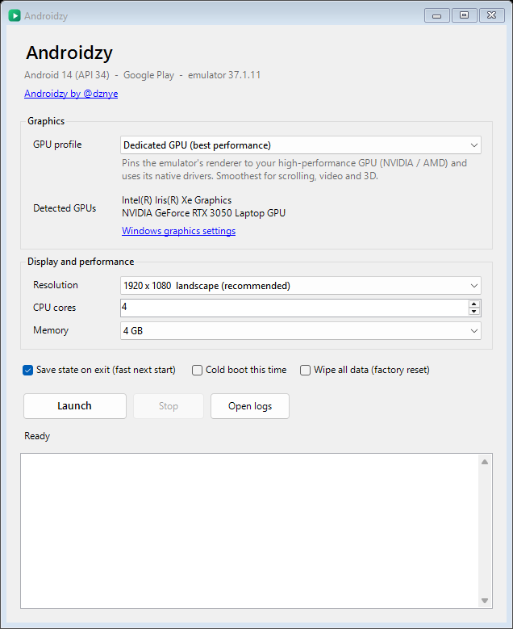

Made for apps
It starts clean: Android 14 with just Google Play, Files and Settings. The preinstalled apps are removed for you, so you install only what you need.
Free Android emulator for Windows PC
Run your Android apps on a big screen, without the game clutter. Android 14 and Google Play on your Windows PC: a second phone for work chat, email and the accounts you manage, back in seconds every time you open it.
v1.2.3 · Windows 10 & 11 · 76 KB · release notes & checksum
If Windows SmartScreen appears on first run, choose More info, then Run anyway.

BlueStacks, LDPlayer, MEmu and MuMu Player are built for games. If you just want your apps on a PC, you don't need keymapping, macros or a game store.
It starts clean: Android 14 with just Google Play, Files and Settings. The preinstalled apps are removed for you, so you install only what you need.
It runs on the same emulator Google ships to Android developers, with Android 14 and Google Play.
No ads, no sign-up, no bundled offers. The source is on GitHub if you want to check.
Keep the apps you rely on one window away, on the computer you already sit at all day.
Keep Slack, Teams, Gmail and Telegram on your PC, apart from your personal phone. Close the window and you are off the clock.
Sign in to as many accounts as each app lets you. Instagram supports up to five on one device. Ideal for creators, small businesses and social media managers.
Use apps that never got a desktop version, with your keyboard and mouse in a full HD window. Capture screenshots and recordings right on your desktop.
Developers and QA get Google's official emulator plus adb, without installing Android Studio.
Try an unfamiliar app on a separate device first. Reset the whole thing with one click when you are done.
Switch to the Integrated GPU profile and the emulator runs on your power-saving graphics chip: cooler, quieter and easier on the battery.
Made for accounts you own or manage. Some apps, such as banking apps, don't run on emulators.
No bloat. It opens Google's emulator with sensible settings and gets out of your way.
The emulator Android Studio uses, running Android 14 with Google Play. No custom Android, no bundled store.
On laptops with two graphics chips, pick Dedicated or Integrated and the emulator uses it for everything. The status bar shows which GPU is in use.
Close it and pick up exactly where you left off. On our test PC it restores in about a second.
Already have Android Studio? It reuses that. Otherwise it downloads what it needs from Google on first run (about 2 GB).
One tiny executable under the MIT license, with emulator usage metrics switched off. Read every line on GitHub.
A folder on your desktop is copied to the phone automatically: photos, videos and music show up in your apps, everything else lands in Downloads. Location is set to the US on every start.
From download to your first app in a few minutes.
Grab the 76 KB Androidzy.exe and run it. There is no installer.
Accept Google's license and it downloads the emulator and Android 14 (about 2 GB). Already have Android Studio? It reuses that.
Choose a graphics profile and a window size. Android opens in its own window.
Open Google Play, sign in and install your apps. Next time it opens in seconds.
Microsoft ended support for it on March 5, 2025, so Windows 11 no longer runs Android apps on its own. Phone Link only mirrors a supported phone, and Google Play Games on PC is for games. For everything else you need an emulator, and this one is built for exactly that.
A quick side-by-side of the ways to run Android apps on a PC.
| Option | Best for | Google Play | Price | Multiple instances |
|---|---|---|---|---|
| This emulator | Everyday apps on a second device | Yes | Free, open source, no ads | One device |
| BlueStacks | Games: keymapping, macros | Yes | Free tier; ads or paid plans may apply | Yes |
| LDPlayer | Games: keymapping, controllers | Yes | Free tier; ads or paid plans may apply | Yes |
| MEmu | Games: keymapping, multi-instance | Yes | Free tier; ads or paid plans may apply | Yes |
| MuMu Player | Games, aimed at lower-spec PCs | Yes | Free tier; ads or paid plans may apply | Yes |
| Android Studio emulator | App developers | Yes, with Play images | Free, needs the full IDE | Yes |
| Phone Link | Mirroring your own phone | Uses your phone's apps | Free | No |
| Windows Subsystem for Android | Discontinued | — | — | — |
Just want your apps? Download it free. Need keymapping or several instances at once? Go with a gaming emulator.
Quick answers before you download.
If you mostly run everyday apps rather than games, try Androidzy. It runs Google's official Android emulator with Google Play and Android 14 on Windows, with no keymapping, macros or game store in the way. If you need keymapping, macros or several instances at once, BlueStacks, LDPlayer, MEmu or MuMu Player fit better.
Yes. Androidzy runs the official Google Android Emulator with Google Play on Windows and is set up for everyday apps: a clean Android 14 device that starts in seconds, stays signed in, and has no game tooling in the way.
Microsoft ended support for Windows Subsystem for Android on March 5, 2025. Phone Link can mirror a supported phone and Google Play Games on PC covers games. For general apps you need an emulator: download Androidzy, accept Google's license on first run, sign in to Google Play and install your apps.
Yes. It gives you a separate Android 14 device on your PC with its own Google account, apps and data, so work chat, email and social accounts stay apart from your personal phone.
Yes, within each app's own limits. Instagram lets you add up to five accounts and Telegram supports several, and Android lets you add multiple Google accounts. Some services, such as WhatsApp, tie an account to a phone number, so a second account needs its own number. Use it for accounts you own or are authorised to manage.
No. Androidzy runs one clean Android device and leaves out game tooling on purpose. If you need keymapping, macros or several instances side by side, a gaming emulator such as BlueStacks, LDPlayer, MEmu or MuMu Player is the better choice.
Yes. It uses Google's official Android 14 system image with Google Play. On first run it downloads the emulator and image from Google (about 2 GB) after you accept Google's license, or it reuses an Android Studio SDK you already have.
Some may not. Banking, payment and DRM-protected streaming apps often check that they run on a certified physical phone and may block any emulator. Use a real phone for apps that require one.
It is free, with no ads. The launcher is open source under the MIT license, so you can read exactly what it does, and emulator usage metrics are switched off. The download is not code-signed yet, so Windows SmartScreen may ask you to confirm: choose More info, then Run anyway.
Windows 10 or 11 (64-bit), a CPU with virtualization turned on in the BIOS, the Windows Hypervisor Platform feature, 8 GB of RAM (4 GB goes to Android by default) and about 6 GB of free disk space.
Free, open source and built for apps, not games.